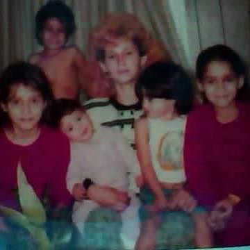

I thought long and hard on who I feel I should do a tribute page for. I wanted to pick someone that I knew, someone who has affected my life personally, someone I admired. This woman, who is now 56 years old, isn't exactly perfect in all matters of life. I mean who is? She mothered me in her high school years and honestly every year on my birthday I personally thank her for letting me live. I thank my grandmother, RIP, for being her full support during the pregnancy. My mother didn't necessarily get to live her teenage years as most teenagers do. She had all 5 of her children with 3 miscarriages by the age of 25. Yes, that is alot of children, but she always showed us true love and sacrifice, even as a young mother.
My mother would clean and cook to the point where you'd think one would be spent, but no, she'd then put on some movies for all of us to watch in the dark, all cuddled up next to each other. She loved watching scary movies and up to this day it's one of my favorite things to do with her because she is the first one to scream when something even remotely scary happens on the cheesiest of scary movies like Sharknado. She makes me smile in my soul. She's full of energy, a firecracker some would say, and she's always ready to put on a smile even on her worst days so that others going through their own hell will hopefully find sunshine even for a moment in time.
For the days that she didn't tell my dad when I did something wrong, for all the nights she couldn't sleep when I was sick and she'd come in to caress my hair and give me medicine and soup so I'd feel better, to her proud moments when I graduated high school and went off to the military, and even till now when she visits me to clean up my house and make me coffee in the morning whenever I'm overwhelmed with life. She's my hero. A devoted mother even with an almost middle aged child. She now passes on her love and laughter to my children and I love seeing her bond with them. She is the perfect example of a mother. She is Love....Selfless Love. I love you aways mom.
